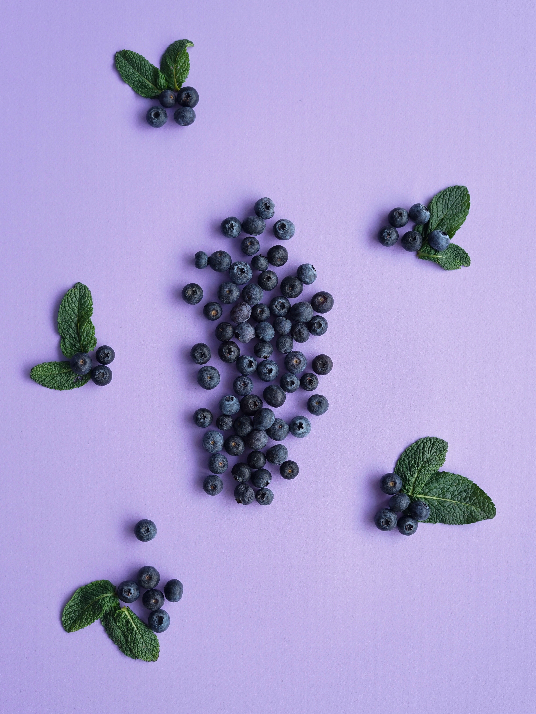

JERUK

Jeruk atau limau adalah semua tumbuhan berbunga anggota marga Citrus dari suku Rutaceae (suku jeruk-jerukan). Anggotanya berbentuk pohon dengan buah yang berdaging dengan rasa masam yang segar, meskipun banyak di antara anggotanya yang memiliki rasa manis. Rasa masam berasal dari kandungan asam sitrat yang memang menjadi terkandung pada semua anggotanya. Sebutan "jeruk" kadang-kadang juga disematkan pada beberapa anggota marga lain yang masih berkerabat dalam suku yang sama, seperti kingkit. Dalam bahasa sehari-hari, penyebutan "jeruk" atau "limau" (di Sumatra dan Malaysia) sering kali berarti "jeruk keprok" atau "jeruk manis". Di Jawa, "limau" (atau "limo") berarti "jeruk nipis".
Kiwi

Kiwi atau Gosberi China adalah nama yang diberikan kepada buah beri yang bisa dimakan dari beberapa jenis tanaman kayu merambat dalam genus "Actinidia". Actinidia asli berasal dari Shaanxi, Tiongkok. Kelompok kultivar Buah kiwi yang paling umum (hayward).Berbentuk oval, kira-kira sebesar telur ayam panjangnya (5–8 cm / 2–3 in dan diameter 4.5–5.5 cm / 1¾–2 ). Buah ini kaya serat, kulit berwarna cokelat kehijau-hijauan agak kusam dan daging buah berwarna hijau terang atau keemasan dengan deretan biji kecil, hitam, dan bisa dimakan. Tekstur buah ini sangat halus dan rasanya yang manis dan unik, saat ini buah kiwi menjadi tanaman komersial di beberapa negara seperti Italia, Selandia Baru, Cile, Yunani, dan Prancis.
BlueBerry
Bluberi atau beri biru adalah tanaman berbunga dalam genus Vaccinium, bagian Cyanococcus. Spesies ini tumbuh di Amerika Utara.[1] Berupa semak yang ukurannya mulai 10 cm hingga 4 m; spesies terkecil dikenal sebagai "bluberry semak rendah" (sama dengan "liar"), dan spesies terbesar adalah "bluberi semak tinggi". Daunnya berganti atau hijau sepanjang tahun, ovate hingga lanceolate, dan mulai 1–8 cm panjangnya dan lebar 0.5-3.5 cm. Bunganya berbentuk bel, putih, merah atau merah muda pucat, kadang-kadang kehijau-hijauan.